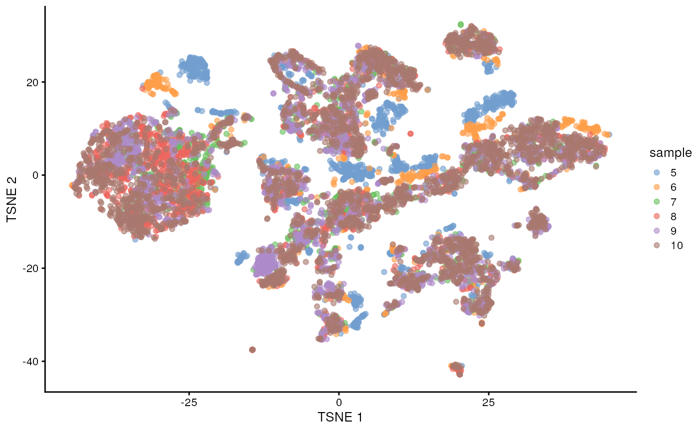
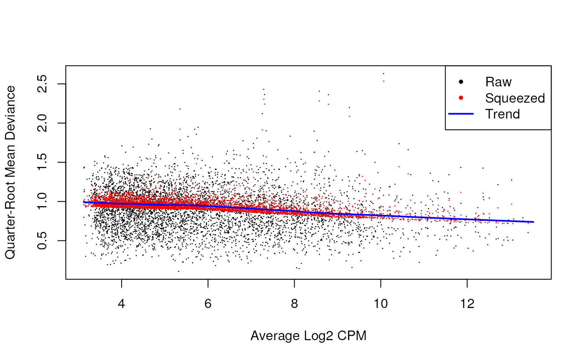

Setup and data exploration
As said, we will use the the data from the Tal1 chimera experiment:
- Sample 5: E8.5 injected cells (tomato positive), pool 3
- Sample 6: E8.5 host cells (tomato negative), pool 3
- Sample 7: E8.5 injected cells (tomato positive), pool 4
- Sample 8: E8.5 host cells (tomato negative), pool 4
- Sample 9: E8.5 injected cells (tomato positive), pool 5
- Sample 10: E8.5 host cells (tomato negative), pool 5
Note that this is a paired design in which for each biological replicate (pool 3, 4, and 5), we have both host and injected cells.
We start by loading the data and doing a quick exploratory analysis, essentially applying the normalization and visualization techniques that we have seen in the previous lectures to all samples.
library(MouseGastrulationData)
sce <- WTChimeraData(samples=5:10, type = "processed")
sce## class: SingleCellExperiment
## dim: 29453 20935
## metadata(0):
## assays(1): counts
## rownames(29453): ENSMUSG00000051951 ENSMUSG00000089699 ...
## ENSMUSG00000095742 tomato-td
## rowData names(2): ENSEMBL SYMBOL
## colnames(20935): cell_9769 cell_9770 ... cell_30702 cell_30703
## colData names(11): cell barcode ... doub.density sizeFactor
## reducedDimNames(2): pca.corrected.E7.5 pca.corrected.E8.5
## mainExpName: NULL
## altExpNames(0):
colData(sce)## DataFrame with 20935 rows and 11 columns
## cell barcode sample stage tomato
## <character> <character> <integer> <character> <logical>
## cell_9769 cell_9769 AAACCTGAGACTGTAA 5 E8.5 TRUE
## cell_9770 cell_9770 AAACCTGAGATGCCTT 5 E8.5 TRUE
## cell_9771 cell_9771 AAACCTGAGCAGCCTC 5 E8.5 TRUE
## cell_9772 cell_9772 AAACCTGCATACTCTT 5 E8.5 TRUE
## cell_9773 cell_9773 AAACGGGTCAACACCA 5 E8.5 TRUE
## ... ... ... ... ... ...
## cell_30699 cell_30699 TTTGTCACAGCTCGCA 10 E8.5 FALSE
## cell_30700 cell_30700 TTTGTCAGTCTAGTCA 10 E8.5 FALSE
## cell_30701 cell_30701 TTTGTCATCATCGGAT 10 E8.5 FALSE
## cell_30702 cell_30702 TTTGTCATCATTATCC 10 E8.5 FALSE
## cell_30703 cell_30703 TTTGTCATCCCATTTA 10 E8.5 FALSE
## pool stage.mapped celltype.mapped closest.cell
## <integer> <character> <character> <character>
## cell_9769 3 E8.25 Mesenchyme cell_24159
## cell_9770 3 E8.5 Endothelium cell_96660
## cell_9771 3 E8.5 Allantois cell_134982
## cell_9772 3 E8.5 Erythroid3 cell_133892
## cell_9773 3 E8.25 Erythroid1 cell_76296
## ... ... ... ... ...
## cell_30699 5 E8.5 Erythroid3 cell_38810
## cell_30700 5 E8.5 Surface ectoderm cell_38588
## cell_30701 5 E8.25 Forebrain/Midbrain/H.. cell_66082
## cell_30702 5 E8.5 Erythroid3 cell_138114
## cell_30703 5 E8.0 Doublet cell_92644
## doub.density sizeFactor
## <numeric> <numeric>
## cell_9769 0.02985045 1.41243
## cell_9770 0.00172753 1.22757
## cell_9771 0.01338013 1.15439
## cell_9772 0.00218402 1.28676
## cell_9773 0.00211723 1.78719
## ... ... ...
## cell_30699 0.00146287 0.389311
## cell_30700 0.00374155 0.588784
## cell_30701 0.05651258 0.624455
## cell_30702 0.00108837 0.550807
## cell_30703 0.82369305 1.184919We now normalize the data and visualize them in a tSNE plot.
## Loading required package: scuttle## Loading required package: ggplot2
library(ggplot2)
library(scran)
# remove doublets
drop <- sce$celltype.mapped %in% c("stripped", "Doublet")
sce <- sce[,!drop]
# normalization
sce <- logNormCounts(sce)
# identify highly variable genes
dec <- modelGeneVar(sce, block=sce$sample)
chosen.hvgs <- dec$bio > 0
# dimensionality reduction
sce <- runPCA(sce, subset_row = chosen.hvgs, ntop = 1000)
sce <- runTSNE(sce, dimred = "PCA")
sce$sample <- as.factor(sce$sample)
plotTSNE(sce, colour_by = "sample")
plotTSNE(sce, colour_by = "celltype.mapped") +
scale_color_discrete() +
theme(legend.position = "bottom")## Scale for colour is already present.
## Adding another scale for colour, which will replace the existing scale.
There are evident sample effects. Depending on the analysis that you want to do you may want to remove or retain the sample effect. For instance, if the goal is to identify cell types with a clustering method, one may want to remove the sample effects with “batch effect” correction methods.
For now, let’s assume that we want to remove this effect.
Correcting batch effects
## This needs work
library(batchelor)
set.seed(10102)
merged <- correctExperiments(sce,
batch=sce$sample,
subset.row=chosen.hvgs,
PARAM=FastMnnParam(
merge.order=list(
list(1,3,5), # WT (3 replicates)
list(2,4,6) # td-Tomato (3 replicates)
)
)
)
merged <- runTSNE(merged, dimred="corrected")
plotTSNE(merged, colour_by="batch")
# do we want to include the diagnostics about the batch correction?Differential Expression
Section 4 of OSCA multisample.
In order to perform a Differential Expression Analysis, we need to identify clusters of cells across samples/conditions (depending on the experimental design and the final aim of the experiment) to proceed with it
clustering identification
g <- buildSNNGraph(merged, use.dimred="corrected")
clusters <- igraph::cluster_louvain(g)
colLabels(merged) <- factor(clusters$membership)
merged <- runTSNE(merged, dimred="corrected", external_neighbors=TRUE)
merged <- runUMAP(merged, dimred="corrected", external_neighbors=TRUE)
# table(colLabels(merged), merged$tomato)
gridExtra::grid.arrange(
plotTSNE(merged, colour_by="tomato", text_by="label"),
plotTSNE(merged, colour_by=data.frame(pool=factor(merged$pool))),
ncol=2
)
As previously mentioned, to assign biological meaning to the found clusters, we need to detect and assign gene-markers and provide cell labels. For lack of time, we will skip this time and knowledge demanding process and we use the annotation included with the dataset. This annotation has been previously performed using a cell type atlas by Pijuan-Sala et al. (2019), using it as a reference for our dataset. From the next figure we can see that there are quite a few similarities between the clusters and the assigned labels, but in some cases we can notice that a cluster can contain multiple cell types, highlighting the difficulty to identify cell types by using cell markers and clusters.
library(bluster)
pairwiseRand(colLabels(merged), merged$celltype.mapped, "index")## [1] 0.5346738
by.label <- table(colLabels(merged), merged$celltype.mapped)
pheatmap::pheatmap(log2(by.label+1), color=viridis::viridis(101))
Pseudo-bulk samples
# Using 'label' and 'sample' as our two factors; each column of the output
# corresponds to one unique combination of these two factors.
summed <- aggregateAcrossCells(merged,
id=colData(merged)[,c("celltype.mapped", "sample")])
summed## class: SingleCellExperiment
## dim: 14699 186
## metadata(2): merge.info pca.info
## assays(1): counts
## rownames(14699): ENSMUSG00000051951 ENSMUSG00000025900 ...
## ENSMUSG00000096730 ENSMUSG00000095742
## rowData names(3): rotation ENSEMBL SYMBOL
## colnames: NULL
## colData names(16): batch cell ... sample ncells
## reducedDimNames(6): corrected pca.corrected.E7.5 ... TSNE UMAP
## mainExpName: NULL
## altExpNames(0):Differential Expression Analysis
label <- "Mesenchyme"
current <- summed[,label==summed$celltype.mapped]
# Creating up a DGEList object for use in edgeR:
library(edgeR)## Loading required package: limma##
## Attaching package: 'limma'## The following object is masked from 'package:scater':
##
## plotMDS## The following object is masked from 'package:BiocGenerics':
##
## plotMA##
## Attaching package: 'edgeR'## The following object is masked from 'package:SingleCellExperiment':
##
## cpm## An object of class "DGEList"
## $counts
## Sample1 Sample2 Sample3 Sample4 Sample5 Sample6
## ENSMUSG00000051951 2 0 0 0 3 0
## ENSMUSG00000025900 0 0 1 0 0 0
## ENSMUSG00000025902 7 0 3 0 14 9
## ENSMUSG00000033845 1420 271 1009 379 1578 749
## ENSMUSG00000002459 3 0 1 1 0 0
## 14694 more rows ...
##
## $samples
## group lib.size norm.factors batch cell barcode sample stage tomato pool
## Sample1 1 4607053 1 5 <NA> <NA> 5 E8.5 TRUE 3
## Sample2 1 1064970 1 6 <NA> <NA> 6 E8.5 FALSE 3
## Sample3 1 2494010 1 7 <NA> <NA> 7 E8.5 TRUE 4
## Sample4 1 1028668 1 8 <NA> <NA> 8 E8.5 FALSE 4
## Sample5 1 4290221 1 9 <NA> <NA> 9 E8.5 TRUE 5
## Sample6 1 1950840 1 10 <NA> <NA> 10 E8.5 FALSE 5
## stage.mapped celltype.mapped closest.cell doub.density sizeFactor label
## Sample1 <NA> Mesenchyme <NA> NA NA <NA>
## Sample2 <NA> Mesenchyme <NA> NA NA <NA>
## Sample3 <NA> Mesenchyme <NA> NA NA <NA>
## Sample4 <NA> Mesenchyme <NA> NA NA <NA>
## Sample5 <NA> Mesenchyme <NA> NA NA <NA>
## Sample6 <NA> Mesenchyme <NA> NA NA <NA>
## celltype.mapped.1 sample.1 ncells
## Sample1 Mesenchyme 5 286
## Sample2 Mesenchyme 6 55
## Sample3 Mesenchyme 7 243
## Sample4 Mesenchyme 8 134
## Sample5 Mesenchyme 9 478
## Sample6 Mesenchyme 10 299Discard lowly “sequenced” samples
discarded <- current$ncells < 10
y <- y[,!discarded]
summary(discarded)## Mode FALSE
## logical 6Discard lowly expressed genes
keep <- filterByExpr(y, group=current$tomato)
y <- y[keep,]
summary(keep)## Mode FALSE TRUE
## logical 9011 5688Normalization factors by TMM
y <- calcNormFactors(y)
y$samples## group lib.size norm.factors batch cell barcode sample stage tomato pool
## Sample1 1 4607053 1.0683392 5 <NA> <NA> 5 E8.5 TRUE 3
## Sample2 1 1064970 1.0487418 6 <NA> <NA> 6 E8.5 FALSE 3
## Sample3 1 2494010 0.9582296 7 <NA> <NA> 7 E8.5 TRUE 4
## Sample4 1 1028668 0.9774156 8 <NA> <NA> 8 E8.5 FALSE 4
## Sample5 1 4290221 0.9707300 9 <NA> <NA> 9 E8.5 TRUE 5
## Sample6 1 1950840 0.9816914 10 <NA> <NA> 10 E8.5 FALSE 5
## stage.mapped celltype.mapped closest.cell doub.density sizeFactor label
## Sample1 <NA> Mesenchyme <NA> NA NA <NA>
## Sample2 <NA> Mesenchyme <NA> NA NA <NA>
## Sample3 <NA> Mesenchyme <NA> NA NA <NA>
## Sample4 <NA> Mesenchyme <NA> NA NA <NA>
## Sample5 <NA> Mesenchyme <NA> NA NA <NA>
## Sample6 <NA> Mesenchyme <NA> NA NA <NA>
## celltype.mapped.1 sample.1 ncells
## Sample1 Mesenchyme 5 286
## Sample2 Mesenchyme 6 55
## Sample3 Mesenchyme 7 243
## Sample4 Mesenchyme 8 134
## Sample5 Mesenchyme 9 478
## Sample6 Mesenchyme 10 299MD plot

MDS plot

design <- model.matrix(~factor(pool) + factor(tomato), y$samples)
design## (Intercept) factor(pool)4 factor(pool)5 factor(tomato)TRUE
## Sample1 1 0 0 1
## Sample2 1 0 0 0
## Sample3 1 1 0 1
## Sample4 1 1 0 0
## Sample5 1 0 1 1
## Sample6 1 0 1 0
## attr(,"assign")
## [1] 0 1 1 2
## attr(,"contrasts")
## attr(,"contrasts")$`factor(pool)`
## [1] "contr.treatment"
##
## attr(,"contrasts")$`factor(tomato)`
## [1] "contr.treatment"
y <- estimateDisp(y, design)
summary(y$trended.dispersion)## Min. 1st Qu. Median Mean 3rd Qu. Max.
## 0.01026 0.01670 0.02128 0.02020 0.02349 0.02665
plotBCV(y)
## Min. 1st Qu. Median Mean 3rd Qu. Max.
## 0.3179 0.7143 0.8538 0.8045 0.9128 1.0665
summary(fit$df.prior)## Min. 1st Qu. Median Mean 3rd Qu. Max.
## 0.2267 12.6749 12.6749 12.3390 12.6749 12.6749
plotQLDisp(fit)
res <- glmQLFTest(fit, coef=ncol(design))
summary(decideTests(res))## factor(tomato)TRUE
## Down 8
## NotSig 5672
## Up 8
topTags(res)## Coefficient: factor(tomato)TRUE
## logFC logCPM F PValue FDR
## ENSMUSG00000010760 -4.3873546 9.934130 1638.59469 1.812293e-16 1.030832e-12
## ENSMUSG00000096768 2.0690698 8.832662 356.36590 1.060836e-11 3.017019e-08
## ENSMUSG00000035299 1.5190728 6.931325 120.14656 1.844351e-08 3.496889e-05
## ENSMUSG00000019188 -1.0596020 7.540121 80.79795 2.373001e-07 2.526790e-04
## ENSMUSG00000101609 1.3762700 7.241651 83.30701 2.392052e-07 2.526790e-04
## ENSMUSG00000045410 -1.7205826 5.127802 79.31386 2.665390e-07 2.526790e-04
## ENSMUSG00000027520 1.8008336 6.797367 83.66324 6.808994e-07 5.532794e-04
## ENSMUSG00000042607 -0.9234911 7.340648 53.44578 2.918297e-06 2.074909e-03
## ENSMUSG00000024423 0.8516300 7.353208 50.31429 4.145416e-06 2.619903e-03
## ENSMUSG00000036446 -0.6031413 9.274529 41.67104 1.204523e-05 6.851324e-03Session Info
## R version 4.3.0 (2023-04-21)
## Platform: x86_64-pc-linux-gnu (64-bit)
## Running under: Ubuntu 22.04.2 LTS
##
## Matrix products: default
## BLAS: /usr/lib/x86_64-linux-gnu/openblas-pthread/libblas.so.3
## LAPACK: /usr/lib/x86_64-linux-gnu/openblas-pthread/libopenblasp-r0.3.20.so; LAPACK version 3.10.0
##
## locale:
## [1] LC_CTYPE=en_US.UTF-8 LC_NUMERIC=C
## [3] LC_TIME=en_US.UTF-8 LC_COLLATE=en_US.UTF-8
## [5] LC_MONETARY=en_US.UTF-8 LC_MESSAGES=en_US.UTF-8
## [7] LC_PAPER=en_US.UTF-8 LC_NAME=C
## [9] LC_ADDRESS=C LC_TELEPHONE=C
## [11] LC_MEASUREMENT=en_US.UTF-8 LC_IDENTIFICATION=C
##
## time zone: Etc/UTC
## tzcode source: system (glibc)
##
## attached base packages:
## [1] stats4 stats graphics grDevices utils datasets methods
## [8] base
##
## other attached packages:
## [1] edgeR_3.42.4 limma_3.56.2
## [3] bluster_1.10.0 batchelor_1.16.0
## [5] scran_1.28.1 scater_1.28.0
## [7] ggplot2_3.4.2 scuttle_1.10.1
## [9] MouseGastrulationData_1.14.0 SpatialExperiment_1.10.0
## [11] SingleCellExperiment_1.22.0 SummarizedExperiment_1.30.2
## [13] Biobase_2.60.0 GenomicRanges_1.52.0
## [15] GenomeInfoDb_1.36.0 IRanges_2.34.0
## [17] S4Vectors_0.38.1 BiocGenerics_0.46.0
## [19] MatrixGenerics_1.12.2 matrixStats_1.0.0
##
## loaded via a namespace (and not attached):
## [1] RColorBrewer_1.1-3 jsonlite_1.8.5
## [3] magrittr_2.0.3 ggbeeswarm_0.7.2
## [5] magick_2.7.4 farver_2.1.1
## [7] rmarkdown_2.22 fs_1.6.2
## [9] zlibbioc_1.46.0 ragg_1.2.5
## [11] vctrs_0.6.3 memoise_2.0.1
## [13] DelayedMatrixStats_1.22.1 RCurl_1.98-1.12
## [15] htmltools_0.5.5 S4Arrays_1.0.4
## [17] AnnotationHub_3.8.0 curl_5.0.1
## [19] BiocNeighbors_1.18.0 Rhdf5lib_1.22.0
## [21] rhdf5_2.44.0 sass_0.4.6
## [23] bslib_0.5.0 desc_1.4.2
## [25] cachem_1.0.8 ResidualMatrix_1.10.0
## [27] igraph_1.4.3 mime_0.12
## [29] lifecycle_1.0.3 pkgconfig_2.0.3
## [31] rsvd_1.0.5 Matrix_1.5-4.1
## [33] R6_2.5.1 fastmap_1.1.1
## [35] GenomeInfoDbData_1.2.10 shiny_1.7.4
## [37] digest_0.6.31 colorspace_2.1-0
## [39] AnnotationDbi_1.62.1 rprojroot_2.0.3
## [41] dqrng_0.3.0 irlba_2.3.5.1
## [43] ExperimentHub_2.8.0 textshaping_0.3.6
## [45] RSQLite_2.3.1 beachmat_2.16.0
## [47] labeling_0.4.2 filelock_1.0.2
## [49] fansi_1.0.4 httr_1.4.6
## [51] compiler_4.3.0 bit64_4.0.5
## [53] withr_2.5.0 BiocParallel_1.34.2
## [55] viridis_0.6.3 DBI_1.1.3
## [57] highr_0.10 HDF5Array_1.28.1
## [59] R.utils_2.12.2 rappdirs_0.3.3
## [61] DelayedArray_0.26.3 rjson_0.2.21
## [63] tools_4.3.0 vipor_0.4.5
## [65] beeswarm_0.4.0 interactiveDisplayBase_1.38.0
## [67] httpuv_1.6.11 R.oo_1.25.0
## [69] glue_1.6.2 rhdf5filters_1.12.1
## [71] promises_1.2.0.1 grid_4.3.0
## [73] Rtsne_0.16 cluster_2.1.4
## [75] generics_0.1.3 gtable_0.3.3
## [77] R.methodsS3_1.8.2 metapod_1.8.0
## [79] BiocSingular_1.16.0 ScaledMatrix_1.8.1
## [81] utf8_1.2.3 XVector_0.40.0
## [83] ggrepel_0.9.3 BiocVersion_3.17.1
## [85] pillar_1.9.0 stringr_1.5.0
## [87] BumpyMatrix_1.8.0 later_1.3.1
## [89] splines_4.3.0 dplyr_1.1.2
## [91] BiocFileCache_2.8.0 lattice_0.21-8
## [93] bit_4.0.5 tidyselect_1.2.0
## [95] locfit_1.5-9.8 Biostrings_2.68.1
## [97] knitr_1.43 gridExtra_2.3
## [99] xfun_0.39 statmod_1.5.0
## [101] DropletUtils_1.20.0 pheatmap_1.0.12
## [103] stringi_1.7.12 yaml_2.3.7
## [105] evaluate_0.21 codetools_0.2-19
## [107] tibble_3.2.1 BiocManager_1.30.21
## [109] cli_3.6.1 uwot_0.1.14
## [111] xtable_1.8-4 systemfonts_1.0.4
## [113] munsell_0.5.0 jquerylib_0.1.4
## [115] Rcpp_1.0.10 dbplyr_2.3.2
## [117] png_0.1-8 parallel_4.3.0
## [119] ellipsis_0.3.2 pkgdown_2.0.7
## [121] blob_1.2.4 sparseMatrixStats_1.12.0
## [123] bitops_1.0-7 viridisLite_0.4.2
## [125] scales_1.2.1 purrr_1.0.1
## [127] crayon_1.5.2 rlang_1.1.1
## [129] formatR_1.14 cowplot_1.1.1
## [131] KEGGREST_1.40.0